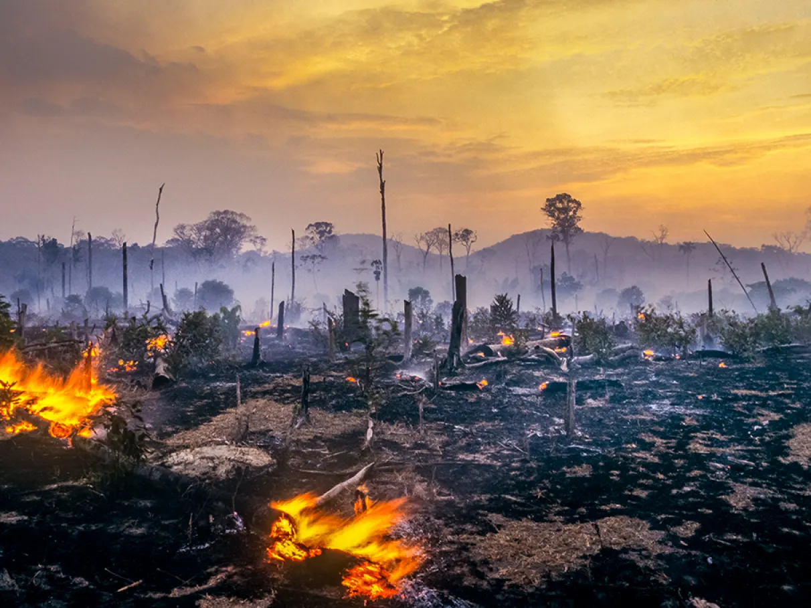
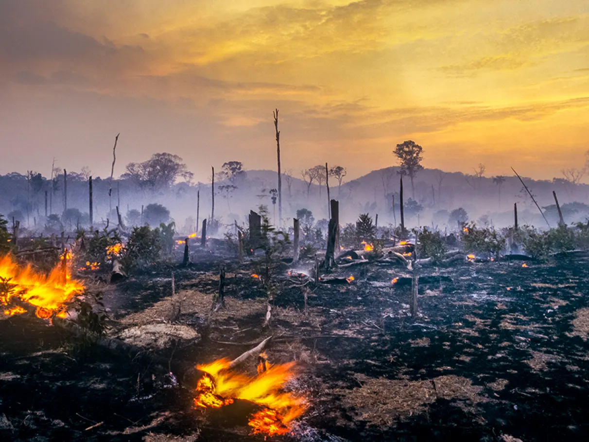

Aumento das enchentes
As mudanças climáticas têm sido apontadas pelos especialistas como um fator que influenciará no aumento da ocorrência de enchentes no Brasil
 

O desmatamento intensifica fenômenos negativos no meio ambiente e na vida das pessoas, afetando enchentes, temperatura e qualidade de vida.
As mudanças climáticas têm sido apontadas pelos especialistas como um fator que influenciará no aumento da ocorrência de enchentes no Brasil
As ilhas de calor são um fenômeno climático típico de áreas urbanas, e, por essa razão, são chamadas também de ilhas de calor urbanas
A destruição das florestas impacta a biodiversidade, aumenta a poluição e reduz o contato com áreas verdes, afetando a saúde mental e respiratória.
O desmatamento impacta diretamente a vida humana. Para evitar suas consequências, é necessário preservar o meio ambiente, investir em reflorestamento e adotar práticas sustentáveis.